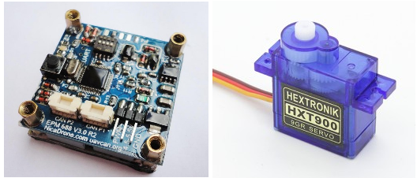

Grippers (for delivery)¶
Copter supports a number of different grippers which can be useful for delivery applications and bottle drops.
Follow the links below (or in sidebar) for configuration information based upon your set-up.
Tip
Grippers can be configured to release in a failsafe situation using FS_OPTIONS (ArduCopter only)
Common Gripper Parameters¶
GRIP_ENABLE: Enables use of gripper and shows following parameters.
GRIP_TYPE: Type of gripper - 0:None(disables without hiddening parameters), 1:Servo, 2:EMP
GRIP_AUTOCLOSE: Time in secs (0 disables) to re-grip payload after releasing. Used for payload replacement after delivery.
GRIP_GRAB: PWM in uS to grab payload
GRIP_NEUTRAL: PWM in uS to neither grab nor release payload
GRIP_RELEASE: PWM in uS to release payload
GRIP_REGRAB: (EMP only) Time interval in seconds (0 disables) to regrab payload to assure EM hold has not decayed.
GRIP_CAN_ID: (EMP only) Refer to https://docs.zubax.com/opengrab_epm_v3#UAVCAN_interface
The autopilot output channel which is attached to the gripper is selected by setting its SERVOx_FUNCTION = “28”(Gripper).
The gripper is controlled by using the MAVLink Command MAV_CMD_DO_GRIPPER or, configuring and RC channel switch to RCx_OPTION = “19(Gripper).